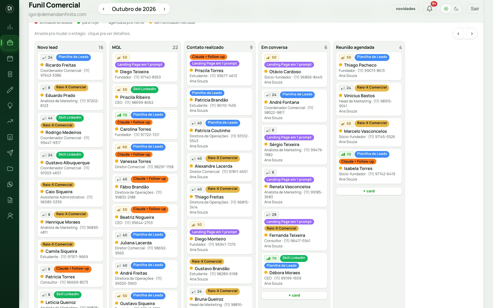
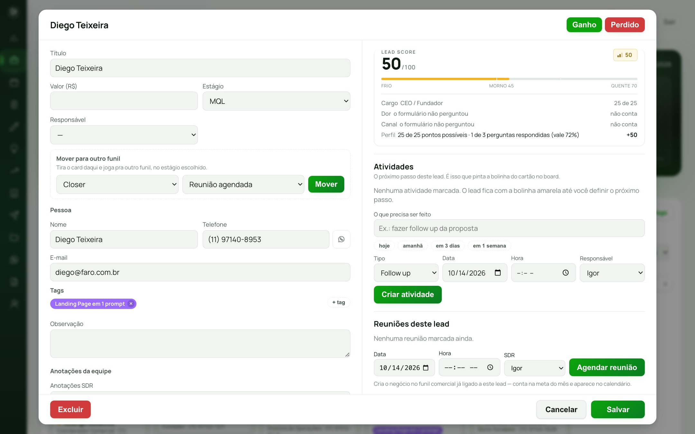
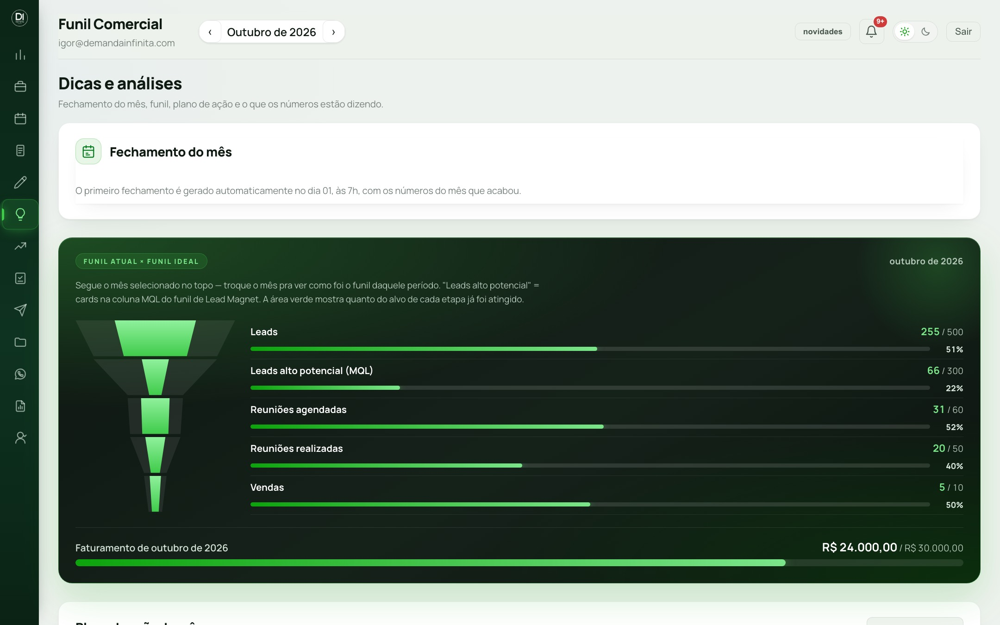
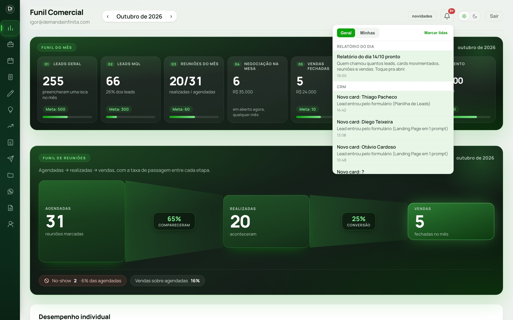
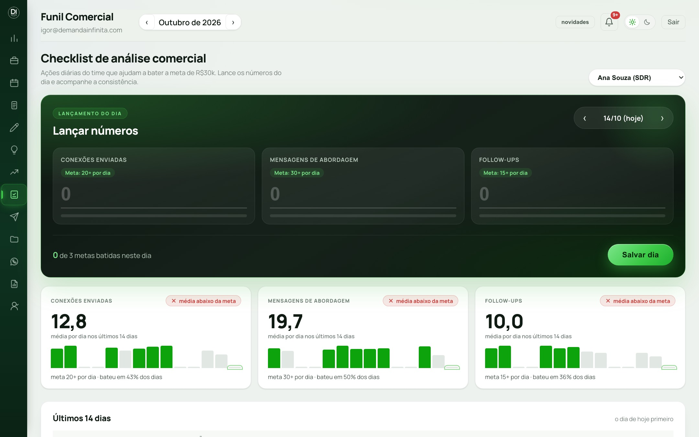

Método Demanda Infinita® · Coisas que eu construí com o Claude
Seu CRM, do seu jeito, feito com o Claude
O passo a passo e os prompts de cada etapa do CRM que roda o comercial da Demanda Infinita. Sem programar e sem mensalidade por usuário.
Material do vídeo · passo a passo
No vídeo eu abri o CRM da minha empresa: o lead que entra sozinho, a reunião que vira card, a tela que mostra onde o funil trava. Aqui está o caminho que eu fiz, na ordem, com o prompt de cada etapa pra você copiar, trocar os colchetes pelas informações do seu negócio e colar no Claude.
Eu levei de 2 a 3 meses, ajustando um incômodo por dia. Com esse mapa, você não precisa repetir os meus tropeços.
Antes de abrir o ClaudeAs 5 regras que eu aprendi construindo
Como quase todo mundo começa
"Faz um CRM bonito pra mim"
Pede o sistema inteiro de uma vez
Descreve a regra em teoria
Coloca no ar e vê o que quebra
Esquece quem pode ver o quê
Como dá certo
Desenha o processo antes da tela
Uma melhoria por vez
Conta um caso real
Testa com dado de mentira antes
Revisa a segurança de propósito
Pensa no Claude como um pedreiro muito rápido. Ele levanta a parede que você pedir, do jeito que você pedir. Se você não tem a planta da casa, ele constrói rápido uma casa que não serve pra você morar.
As 5 peças, em linguagem simples
Banco de dados
O arquivo da empresa. Onde moram leads, cards e reuniões.
Painel
A tela do CRM. Uma página que você abre no navegador.
Claude Code
O pedreiro. Escreve tudo; você descreve e aprova.
Campainha
O aviso que o formulário e a agenda tocam no CRM (o nome técnico é webhook).
Chave de cada sala
A regra de quem entra em cada tabela (o nome técnico é RLS).
Endereço
Onde o painel fica no ar, com login (GitHub Pages).
Etapa 00 · o erro número 1Desenhe o seu processo antes da tela
O erro número 1 é abrir a IA e pedir a tela. Sai um CRM bonito e inútil, porque a IA não sabe como o seu comercial funciona. Escreva o seu processo numa página. Essa página vale mais do que qualquer prompt deste material.
Folha do processo · preencha antes de tudo
MEU PROCESSO COMERCIAL (1 página)
De onde vem o lead: [ex: formulário dos materiais do LinkedIn, indicação, site]
Quem atende: [ex: eu + 1 SDR + 1 vendedor]
Etapas do funil, na ordem: [ex: Novo lead → Lead quente → Contato feito → Em conversa → Reunião agendada → Reunião realizada → Proposta → Fechado]
Quando um lead vira quente: [ex: cargo de dono, diretor ou gerente; baixou 2 materiais; respondeu a mensagem]
O que conta como reunião realizada, proposta e venda: [...]
Como funciona o meu follow-up: [quantos contatos, em quantos dias, por qual canal]
Meta do mês: [leads, reuniões, vendas e faturamento]
O que mais me irrita hoje na planilha ou no CRM que eu uso: [...]
Dica que vale ouroGuarde a data em que o lead entrou em cada etapa importante (virou quente, marcou reunião, recebeu proposta). Sem isso, quando o card avança, ele some das métricas do mês e você perde a conta de quantos chegaram até ali.
Etapa 01A base: banco, funil e cards
No Claude Code, abra uma pasta nova chamada meu-crm e ligue o Plan Mode (aperte Shift + Tab até aparecer "plan mode" embaixo da caixa de mensagem). Nesse modo ele pergunta e propõe, mas não cria nada sem a sua aprovação.
Prompt 1 · o briefing do CRM
Quero construir o meu próprio CRM comercial. Antes de criar qualquer arquivo, leia a minha folha do processo abaixo, me faça as perguntas que faltam e proponha um plano.
[cole aqui a sua folha do processo]
Tecnologia:
- Banco e login: Supabase (plano gratuito)
- Painel: uma página só, publicada no GitHub Pages
- Cada pessoa entra com e-mail e senha; sem cadastro aberto
Me entregue:
1. As perguntas que faltam
2. As tabelas do banco e o que cada uma guarda, em português simples
3. As telas: funil em colunas, card do lead, painel com os números do mês
4. Os riscos de segurança e como você vai evitar cada um
Por trás: ele monta a planta da casa antes de levantar a parede. Você corrige o plano, tira o que não vai usar e aprova com "Aprovado, pode seguir".
Prompt 2 · criar o banco
Escreva o SQL completo pra criar no Supabase as tabelas do plano aprovado (funis, etapas, cards, histórico do card, reuniões).
Regras obrigatórias:
- liga o Row Level Security em TODAS as tabelas
- só usuário logado lê e escreve; ninguém anônimo acessa nada
- o histórico do card se preenche sozinho quando ele muda de etapa
- guarda a data em que o card entrou em cada etapa importante
- no fim, me explica em português simples o que cada tabela faz
Me entrega o SQL num bloco só, pronto pra colar no SQL Editor.
Prompt 3 · construir o painel
Construa o painel do CRM numa página só (index.html), ligada ao meu Supabase. Vou te passar a URL do projeto e a chave pública.
Telas:
1. Login com e-mail e senha
2. Funil em colunas: arrastar o card muda a etapa e grava no histórico
3. Card aberto: campos, próxima ação com data e o histórico
4. Painel do mês: leads, reuniões agendadas e realizadas, propostas, vendas e faturamento contra a meta
5. Busca por nome, e-mail, telefone ou cargo (sem diferenciar acento)
Visual limpo, com as cores da minha marca: [cores]. Funciona no celular.
Só a chave pública vai na página. NUNCA a chave secreta.

O funil em colunas do meu CRM. Cada etiqueta colorida é o material que o lead baixou. Dados fictícios.Se você tem alguém técnico, entregue esta parte pra eleOnde ficam as chaves e como publicar
O quê
Onde
URL e chave pública
Supabase → Project Settings → API. Podem ir na página.
Chave secreta (service_role)
Nunca vai na página nem no chat. Se colou sem querer, gere outra.
Cadastro aberto
Supabase → Authentication → desligar o sign up e criar a equipe na mão.
Publicar
Repositório no GitHub → Settings → Pages → branch main → Save.
Etapa 02O lead entra sozinho, já classificado
Alguém baixa um material seu, preenche o formulário e, na hora, vira card. O sistema lê o cargo e decide a coluna. Se a mesma pessoa baixar dois materiais, continua sendo um card só, agora com duas etiquetas, e a pontuação dela sobe.
Prompt 4 · formulário vira card
Quando alguém preencher o meu formulário [Tally / formulário do site], quero que vire card sozinho no meu CRM.
Como eu quero que funcione:
- cargo de dono, fundador, CEO, diretor, gerente ou head: vai direto pra coluna "Lead quente" e grava a data em que virou quente
- qualquer outro cargo: entra em "Novo lead"
- cada material tem uma etiqueta com o nome dele
- se a mesma pessoa (mesmo e-mail) baixar outro material, NÃO cria card novo: coloca mais uma etiqueta no card dela
- cada lead ganha uma pontuação de 0 a 100 (cargo, quantos materiais baixou, se respondeu as mensagens) e o card mostra o porquê de cada ponto
- se o aviso do formulário falhar um dia, o CRM busca sozinho os envios que ficaram pra trás
Antes de criar, me explica em português simples onde eu colo o endereço do aviso no formulário.
Por trás: o formulário "toca a campainha" do CRM a cada envio. Repare na última regra: no meu caso, o aviso parou uma vez por 9 dias sem ninguém perceber. Por isso o painel também confere sozinho o que chegou.

O card do lead: pontuação explicada à direita, etiqueta do material, histórico e o botão de agendar reunião. Dados fictícios.
Etapa 03A reunião vira card sozinha (e tem comemoração)
Antes, alguém copiava a reunião da agenda pro CRM. Agora o card anda sozinho pra coluna de quem vai fazer a call, a reunião entra com dono e o time recebe o aviso.
Prompt 5 · agenda vira reunião
Quando um lead marcar reunião na minha agenda [Cal.com / Google Agenda]:
- se ele já tem card (mesmo e-mail), o card anda pra "Reunião agendada"; se não tem, cria
- cria a reunião com data, hora e dono (o dono é quem tem aquela agenda)
- avisa o time no [Discord / WhatsApp / e-mail]
E quando alguém do time agendar uma reunião pelo próprio card, quero uma comemoração na tela: confete e uma frase curta. Comercial vive de pequena vitória.
Time com mais de uma agendaNo meu, cada closer novo é uma linha numa tabela de agendas. O card já entra com o dono certo.
Etapa 04 · a minha tela favoritaFunil ideal contra funil real
O contorno é o funil ideal: quantos leads, reuniões e vendas eu preciso no mês pra bater a meta. Dentro, em verde, é onde eu estou hoje. Bato o olho e sei qual etapa trava.

Tem lead e não tem reunião? O problema é o contato. Tem reunião e não tem venda? O problema é a conversão. Dados fictícios.
Prompt 6 · funil ideal x real
A minha meta do mês é R$ [30.000]. Pra isso eu preciso de [500] leads, [300] leads quentes, [60] reuniões agendadas, [50] realizadas e [10] vendas.
Quero uma tela em formato de funil de verdade: o contorno de cada etapa é a meta, e dentro, em verde, quanto eu já fiz no mês. Faturamento fica numa barra separada, embaixo.
Regras:
- sempre o mês corrente, pra eu bater o olho e saber como está agora
- um lead que virou quente conta no mês mesmo que já tenha avançado de etapa
- nada de vermelho e amarelo: a cor é verde, e o tamanho mostra o quanto falta
Etapa 05 · conte o caso, não a regraO dinheiro na mesa
Aqui fica tudo que já tem valor de proposta mas ainda não fechou. E é o melhor exemplo da dica mais valiosa: em vez de descrever a regra, conte o caso.
Regra em teoria
"Some as oportunidades com status de proposta"
Caso real
"Fiz a call hoje, sei que é R$ 4.000, o cliente responde na segunda"
Prompt 7 · dinheiro na mesa
Fiz uma call hoje. O cliente vai me responder na segunda e eu já sei que é R$ 4.000. Ainda não é venda e eu nem mandei a proposta formal, mas pra mim isso já é dinheiro na mesa.
Quero um número no painel com a soma de tudo que já tem valor de proposta e ainda não fechou nem foi perdido. Esse número não depende do mês: é o que está na mesa agora.
O que aconteceu comigoNa primeira versão, ele somou o valor de leads que nem tinham falado comigo e apareceram mais de R$ 100 mil na mesa. Bonito e falso. Eu mostrei o caso real, ele entendeu a diferença e corrigiu. Quando o número parecer bom demais, desconfie e mostre um caso.
O modelo pra qualquer melhoria
Prompt de melhoria · use toda vez
Hoje me incomodou isso: [o que aconteceu, com um exemplo real].
Eu queria que acontecesse assim: [como deveria ser].
Antes de mexer, me diz o que vai mudar e o que pode quebrar.
Por trás: é a dica número 2, uma melhoria por vez. O meu CRM não nasceu pronto: cada tela que você viu no vídeo foi um incômodo de um dia.
Etapa 06O sistema cobra por você
Eu montei um sistema que não depende de mim pra gerenciar o time. O sino avisa o que importa, e quem não bateu a meta de ontem recebe o aviso dentro do painel, sem eu precisar cobrar no grupo. Eu só cobro o resultado no fim da semana ou do mês.

O sino: lead novo, card que andou, reunião do dia. Dados fictícios.

O checklist diário do time, com a média contra a meta. Dados fictícios.
Prompt 8 · sino e checklist
Quero um sino no topo do painel com o que importa: mensagem nova, card que mudou de etapa e reunião do dia. Separe em "Geral" e "Minhas". Não precisa guardar cada aviso no banco: calcule com o que já existe e guarde só quem já leu.
E um checklist diário pro time: cada pessoa lança os números do dia ([conexões enviadas, mensagens, follow-ups]), cada um com a sua meta. Quem não bateu a meta de ontem recebe um aviso aqui dentro, numa janela curta que precisa de um "Ok" e leva direto pro checklist. Nada de cobrança no grupo do WhatsApp.
Prompt 9 · tour de novidades
Toda vez que eu lançar uma melhoria, quero que o time veja um tour curto na primeira vez que entrar: um passo por novidade, texto leve e com humor, e um botão "me leva lá". Fechou, não aparece de novo. Quando eu mudar o número da versão, aparece de novo pra todo mundo.
Por trás: sistema que ninguém sabe usar é sistema morto. O tour faz o time descobrir a novidade sem você mandar mensagem explicando.
Etapa 07 · antes da equipe usarTeste com dado de mentira e cuide de quem vê o quê
Prompt 10 · testar antes de usar
Antes de colocar isso no ar, testa com dado de mentira e me mostra o que pode quebrar. Testa principalmente:
- duas pessoas abrindo o painel ao mesmo tempo
- o mesmo lead chegando duas vezes
- um card mudando de funil ou de etapa
- a virada do mês nas métricas
Me diz o que passou, o que falhou e o que você corrigiu.
Prompt 11 · quem vê o quê
Revisa a segurança do meu CRM como se você fosse alguém tentando roubar os meus leads. Me responde:
- alguém sem login consegue ler alguma tabela?
- tem alguma chave secreta no código da página?
- quem do time consegue ver e mexer em quê? Faz sentido pro cargo de cada um?
- o cadastro está fechado?
Me entrega a lista do que corrigir, do mais grave pro menos grave, em português simples.
Checklist antes de liberar pro time
1Segurança ligada em todas as tabelas (a chave de cada sala).
2Cadastro aberto desligado, usuários criados na mão.
3Chave secreta fora da página e fora do chat.
4Cópia de segurança semanal dos dados (peça ao Claude uma rotina automática).
5Testado no celular: login, arrastar card, abrir e editar.
Erros que derrubam o CRM
Erro
Como evitar
Começar pela tela, sem desenhar o processo
Folha do processo primeiro, depois o Plan Mode
Pedir tudo de uma vez
Uma melhoria por vez, testando cada uma
Campo demais no card
Comece com o mínimo e adicione quando sentir falta
Card avança e some das métricas
Guardar a data de entrada em cada etapa importante
Número bom demais pra ser verdade
Mostrar um caso real e pedir pra conferir de onde vem
Banco sem segurança ou cadastro aberto
Prompt 11 e o checklist acima, antes de usar
Método Demanda Infinita®
Quer o funil inteiro rodando, do post no LinkedIn até a reunião no seu CRM?
Em 30 minutos eu olho o seu caso e te mostro por onde começar.